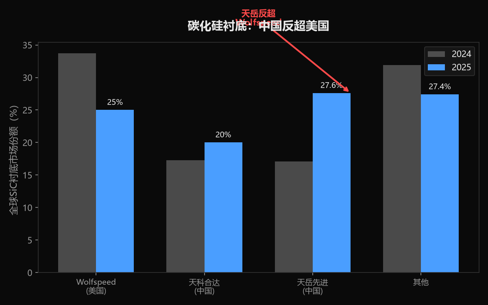
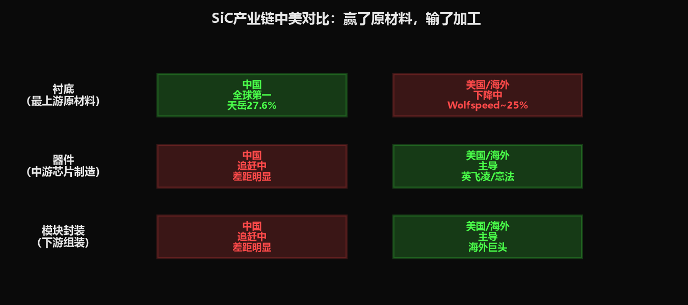

小K·AI行业数据分析 | 2026-06-28
所有人盯着GPU、HBM、光刻机——但AI数据中心里有个东西，没有它GPU根本开不了机。它不是芯片，是芯片的"电源"。英伟达下一代数据中心转向800V供电，这个决定正在引爆一个99%的人不知道的市场。而中国在这个市场最上游的环节，已经反超美国。
一台AI服务器，里面有GPU、有HBM内存、有网络芯片——但这些加起来只是"发动机"。要让发动机转起来，你需要"油路"——电源管理系统。
功率半导体就是油路的核心零件。它负责把电网里的交流电，转换成GPU能用的直流电，并且控制电压和电流。如果油路供不上油，发动机再好也是废铁。
AI服务器有多吃电？一台英伟达H100服务器，单台功耗10-12千瓦。一个标准机柜42U，满载功耗可达40-50千瓦。传统数据中心一个机柜才5-8千瓦——AI服务器直接把功耗翻了5-8倍。
功率半导体是什么？ 它不是某一种芯片，而是一大类元件的总称，包括MOSFET（金属氧化物半导体场效应管）、IGBT（绝缘栅双极型晶体管）、SiC（碳化硅）器件等。名字很拗口，你只需要知道：它们都是"电闸"——控制电流的开关。区别在于能扛多大电压、开关多快、损耗多少。
AI服务器功耗暴增，传统的"电闸"扛不住了。
英伟达宣布下一代AI数据中心将转向800V直流供电架构。
800V是什么概念？ 现在的数据中心一般用48V或380V供电。800V相当于把电压翻了一倍多。为什么要升压？因为功率=电压×电流，输送同样的功率，电压越高电流越小，线路上损耗就越少。就像高速公路——同样运5000吨货，用大卡车（高压）比用小轿车（低压）效率高得多。
但800V有个致命问题：传统的硅基MOSFET在这么高的电压下会"击穿"——就像水管压力太大爆管了一样。能扛住800V的，只有两种材料：碳化硅（SiC）和氮化镓（GaN）。
这就是为什么功率半导体突然成了AI数据中心的关键。不是因为它们变强了，而是因为英伟达把供电标准从"普通汽油"升级到了"航空燃油"，能扛住这个压力的只有SiC和GaN。
功率半导体正在密集涨价。2026年5月，海内外厂商密集发出涨价通知，幅度10%-25%。
| 现象 | 数据 | 来源 |
|---|---|---|
| 涨价幅度 | 10%-25% | 财联社 |
| 供需紧张持续时间 | 预计6-12个月 | TrendForce |
| AI服务器对高压MOSFET需求 | 暴增，挤占8英寸产能 | 财联社 |
| 扬杰科技Q1利润预增 | 20%-40% | 新浪财经 |
| 英飞凌/意法半导体 | 率先调价，国内跟进 | 中国工业新闻网 |
原因很直接：AI数据中心的需求爆发式增长，把原来给电动车和工业用的8英寸晶圆产能全抢了。功率半导体用的不是最先进的3nm/5nm产线，而是成熟的8英寸产线——这条产线本来产能就紧张，AI一挤，彻底不够了。
| 指标 | 数据 | 来源 |
|---|---|---|
| 全球功率半导体市场（2025） | 557亿美元 | Global Market Insights |
| 全球功率半导体市场（2030预计） | 433亿美元（另一口径289亿→433亿） | 知乎专栏/GMI |
| 碳化硅市场（2024） | 26亿美元 | 东方财富研报 |
| 碳化硅CAGR（2020-2024） | 45.4% | 东方财富研报 |
| AI数据中心相关功率半导体（2030） | 106亿美元，占总市场近1/4 | 知乎专栏引机构数据 |
来源数据口径不完全一致，GMI的557亿美元和知乎专栏的289亿美元差异可能来自统计范围不同（是否含功率IC）。已标注，读者可自行判断。
碳化硅市场4年涨了45%复合增长率——这不是"温和增长"，是"爆发"。而AI数据中心在2024年还只占SiC市场很小一块，到2030年要吃掉近一半。
碳化硅产业链分三层：
1. 衬底（最上游，原材料）——这是最难的，也是价值量最高的
2. 外延+器件（中游，把衬底做成芯片）
3. 模块封装（下游，把芯片组装成功率模块）
最上游的衬底环节，中国反超了。
| 厂商 | 国家 | 2024份额 | 2025份额 | 变化 |
|---|---|---|---|---|
| Wolfspeed | 美国 | 33.7% | 下降中 | ↓ |
| 天岳先进 | 中国 | 17.1% | 27.6%（全球第一） | ↑↑ |
| 天科合达 | 中国 | 17.3% | 第二 | ↑ |
来源：集邦咨询（2024数据）、富士经济社（2025数据）、财联社/新浪财经印证
天岳先进的8英寸SiC衬底全球市占率超过50%，把Wolfspeed从第一挤下来了。Wolfspeed甚至一度传出破产传闻。
8英寸是什么意思？ SiC衬底是圆片，尺寸越大单片能切的芯片越多，成本越低。从6英寸升到8英寸，单位成本降约35%。天岳先进在8英寸上领先，意味着它在成本上有优势。
但——衬底之外的两个环节，中国仍然落后：
| 环节 | 格局 | 中国位置 |
|---|---|---|
| 衬底 | 中国反超 | 天岳先进全球第一 |
| 器件（芯片） | 英飞凌、意法半导体主导 | 追赶中，差距明显 |
| 模块封装 | 海外巨头主导 | 追赶中 |
中国在SiC产业链的处境：赢了最上游的原材料，输了中下游的加工。 就像卖面粉的赚了钱，但卖面包的钱被别人赚走了。
功率半导体被忽视的原因很简单：它不够"性感"。
AI产业链12层里，第2层芯片有英伟达/华为的巨头对决，第4层大模型有OpenAI/DeepSeek的明星公司，第9层Agent有无数创业公司。但第1层能源和第3层基础设施的交叉地带——供电——没有明星公司，没有爆款产品，没有发布会。
但它不可或缺。没有功率半导体，GPU开不了机。没有SiC，800V架构建不起来。没有800V，下一代AI数据中心的功耗就扛不住。
AI产业链最被低估的一层，不是因为它不重要，而是因为它太底层了——就像没人会关心高速公路的地基，但地基塌了，路也没了。
英伟达800V架构正在引爆功率半导体市场。SiC和GaN成为AI数据中心不可替代的材料。中国在天岳先进带领下的衬底环节反超美国，但器件和模块仍落后。
这是一个"隐藏赛道"——不在12层的任何一层里，而是第1层和第3层的缝隙中。但它可能是AI产业链里，中国唯一一个在最上游环节实现反超的领域。
所有人都在看发动机谁强，但决定比赛胜负的可能是油路。


数据来源：财联社（涨价10%-25%/供需紧张6-12个月）、TrendForce（供需紧张预期）、新浪财经（扬杰科技利润预增）、中国工业新闻网（英飞凌/意法调价）、Global Market Insights（功率半导体557亿美元）、东方财富研报（SiC 26亿美元/CAGR 45.4%）、知乎专栏引机构数据（AI数据中心2030年106亿美元）、电子工程专辑（英伟达800V架构/SiC GaN需求）、集邦咨询（2024衬底份额Wolfspeed 33.7%/天科合达17.3%/天岳17.1%）、富士经济社/财联社（2025天岳27.6%全球第一）、新浪财经/证券时报（天岳8英寸市占率超50%）、东方财富研报引天科合达测算（6→8英寸成本降35%）